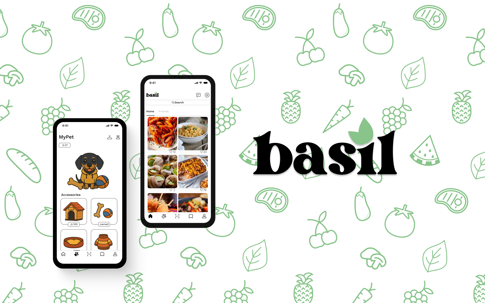
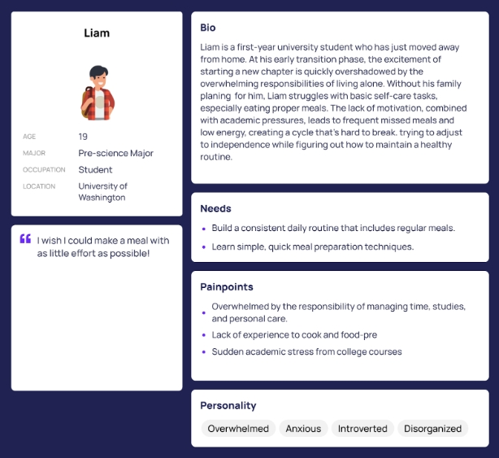
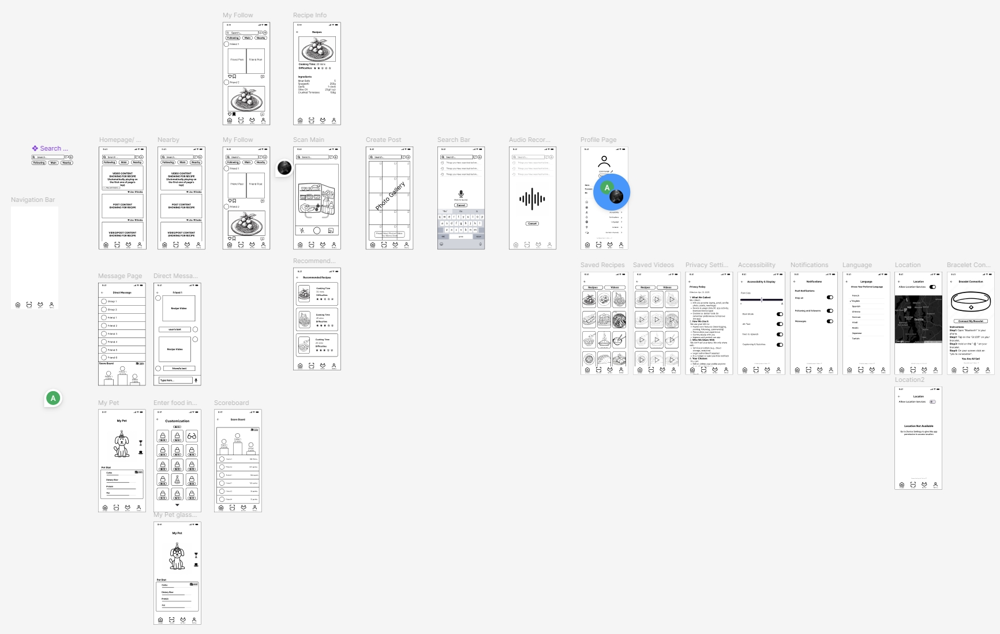
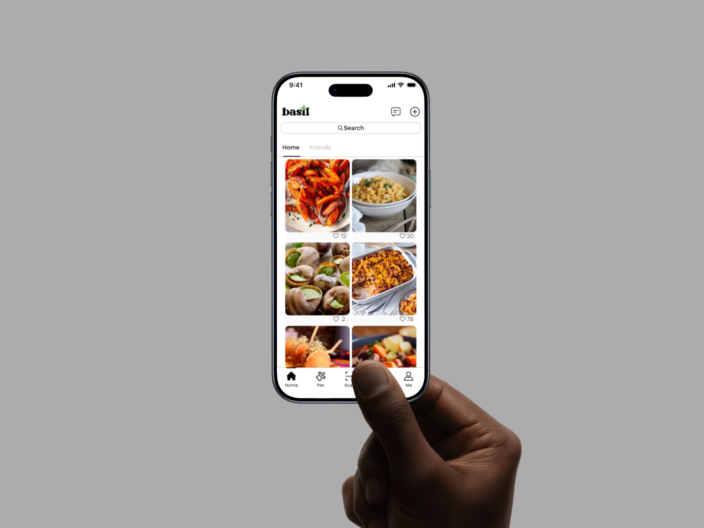
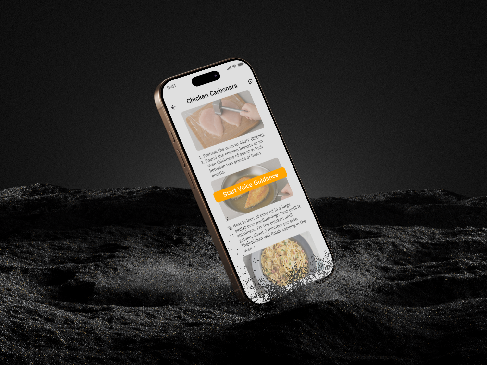
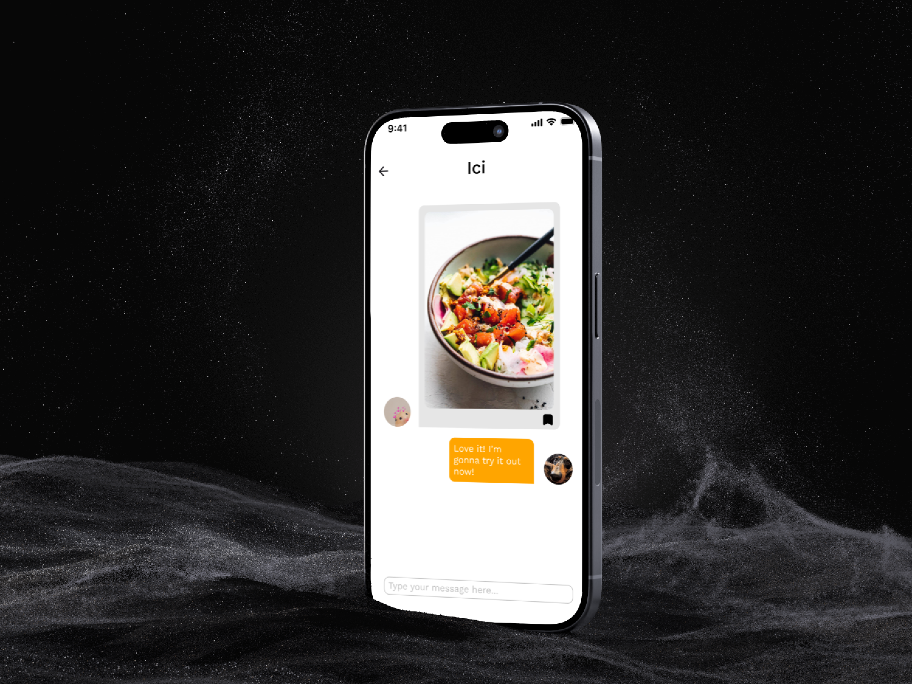
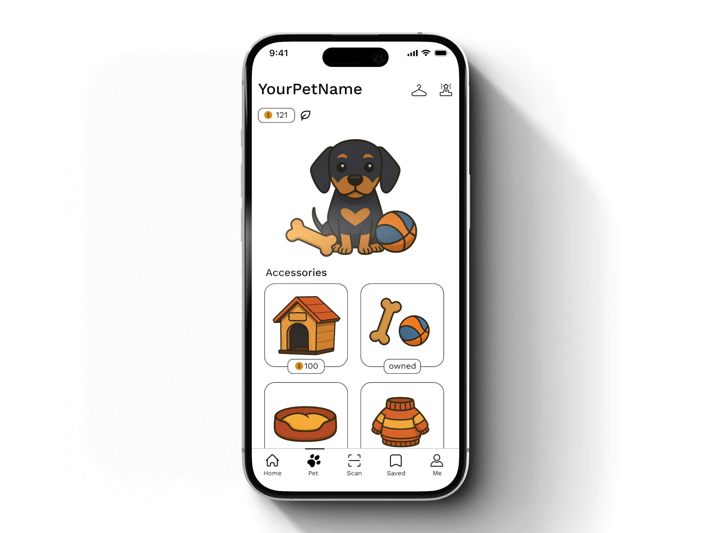

User Research / Wireframes / Mobile Prototype
Basil Eating Habit App Design
A student wellness app concept that helps UW students build steadier eating habits through community support, recipe discovery, ingredient scanning, and light gamification.

Snapshot
Helping students eat regularly when time and motivation are low.
2025
UX Researcher + Wireframe / Prototype Designer
20 weeks
UW undergraduate user-centered design project
Overview
The problem was not only meal planning. It was confidence, energy, and routine.
Our team studied why college students skip meals or fall into unhealthy eating patterns. Survey and interview findings pointed to busy schedules, low motivation, limited cooking experience, and the transition into independent living.
My main role was conducting user research and turning those insights into wireframe prototypes. I worked on the early structure of the app, mapping how community, recipe support, scanning, and motivation features could fit into one usable mobile flow.
Research
We narrowed the audience to first-year students learning to live independently.

After survey and interview synthesis, we created personas around shared student behaviors. Liam became the primary design lens because his pain points were actionable: limited cooking experience, stress from coursework, inconsistent routines, and wanting meals with as little effort as possible.
Design process
The concept shifted from reminders to a supportive food routine.
Understand habits
I helped translate survey and interview findings into patterns around time, cooking confidence, meal skipping, and motivation.
Sketch the structure
I designed wireframe flows for community posts, recipe discovery, scan-based cooking support, saved content, and profile settings.
Refine through testing
User testing pushed us to clarify navigation labels, make controls consistent, and connect the motivation system more directly to eating habits.
Wireframes
I used low-fidelity screens to organize the product before visual polish.

Final direction
Basil became a friendly mobile system for food discovery and habit support.




Outcome
The prototype connected research findings to a more complete student support system.
The final app concept combines a community home feed, recipe and cooking guidance, ingredient scanning, saved content, and a light rewards system. From my side, the strongest contribution was shaping early research into wireframes that made the product testable before the interface became high fidelity.
Reflection
A wellness tool works best when it feels supportive, not demanding.
Basil helped me practice the full research-to-prototype loop: gathering user evidence, narrowing an audience, building personas, translating needs into flows, and testing whether the structure made sense.
The project also reminded me that motivation features need care. They should help students feel capable and gently guided, rather than making food habits feel like another task they are failing to complete.